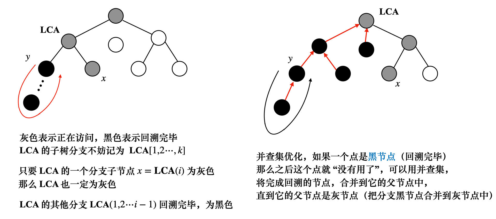

树上问题及方法（一）
树上问题的构图方式
树上问题，往往伴随着求，在构图的时候
需要构造出如下数据结构
- ，用于倍增，表示从 开始往根节点走 的步长能够到的节点
- 表示 这个节点的深度，对于
1 | vector<int> G[maxn]; |
dfs 遍历
1 | void dfs(int u, int pa) { |
bfs遍历
1 | void bfs(int s) { |
倍增法求 LCA
- 先根据 dfs 或者 bfs 求出来的 数组，打出 表
算法实现过程，对于询问，不妨设 （不满足的话交换）
- 对于，将其调整到和 同一深度
从 这个节点依次尝试往上走 步
只要 （让 往上走） - 此时 在同一深度，注意特判， 就说明我们找到了
否则，对同一深度的，同步往上走，看是否相遇
依旧是尝试
只要，就同步向上调整 - 最后他们一定只差一步相遇 就是答案
1 | class Graph { |
其实代码可以更简洁，将 部分的代码
合并到 中，也就是说，我们一边 一边求出 表
1 | void dfs(int u, int pa) { |
tarjan 离线求 LCA

- 将所有查询全部读入，用三元组 来表示
- 记录节点属于哪一类（未访问，已访问未回溯，已回溯）
- 并查集来维护节点，每一次完成回溯时，将黑色节点并入灰色节点
- 执行，在任意时刻，将节点分为三类
- 对于已经完成回溯的节点，
- 正在访问，没有发生回溯的节点，
- 未访问的节点，
- 任意时刻，对于当前正在访问的节点，路径
一定没有开始回溯，也就是说，路径上所有点的
此时检查所有和 相关联的询问，如果 已经开始回溯，即
一定是 往上走第一个遇到的 的点- 如图中加入并查集优化，我们是不断把黑色节点 并入其父节点 中，直到父节点为灰色，令
- 所以 往上走第一个遇到的灰色节点，其实就是并查集的查询结果
- tarjan LCA 是一个离线算法，并且不像倍增算法将 弄到同一深度，再同时往上走，tarjan LCA 执行的时候，
对于同一询问， 并不对称
也就是说， 可能和 不一定相等
举个例子，比如 是 的子节点
在执行 的时候， 为灰色，并不会执行并查集的合并，此时，不等于
只有 的时候， 为黑色， 为灰色，此时才会更新
解决这个问题的办法其实很简单，就是将询问离线读入的时候，记录询问
将 映射到同一个，然后 的时候，更新 即可
1 | const int maxn = 50000 + 10; |
本博客所有文章除特别声明外，均采用 CC BY-NC-SA 4.0 许可协议。转载请注明来自 算法小站！
打赏
 微信
微信 支付宝
支付宝


评论